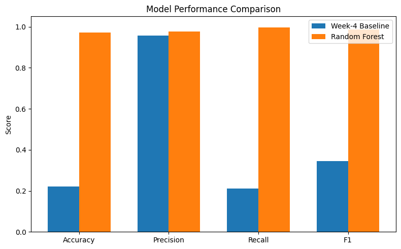
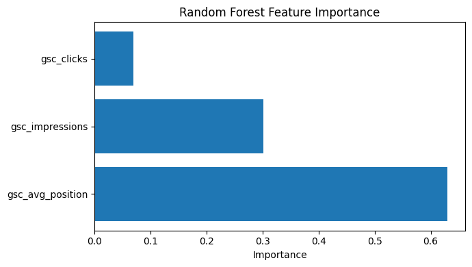

Editorial teams often struggle to identify which webpages require immediate attention when managing large websites. This project presents a machine learning approach for prioritizing pages that are likely to receive zero engaged sessions using Google Search Console and Google Analytics 4 metrics. A Random Forest classifier was trained using search impressions, clicks, and average search position, and compared against a simple rule-based baseline. The proposed model achieved an accuracy of 97.2% and an F1-score of 98.6%, substantially outperforming the baseline. The results demonstrate that machine learning can effectively support editorial decision-making by identifying pages that should be reviewed first, allowing teams to allocate their effort more efficiently.
Modern websites often contain thousands of pages, making it difficult for editorial teams to manually determine which pages require attention. Pages with low engagement or poor search visibility may reduce the overall effectiveness of a website and consume valuable maintenance resources.
This project investigates whether machine learning can help prioritize content pages for editorial review. Using search performance metrics from Google Search Console and engagement metrics from Google Analytics 4, a classification model was trained to predict whether a page is likely to receive zero engaged sessions.
The objective is not to replace human editors but to provide a ranked list of pages that deserve review first. Such a system can help content teams focus their effort where it is most likely to improve user engagement and search performance.
The dataset used in this project was provided as part of the FlyRank Machine Learning Internship. It combines website performance data from Google Search Console (GSC) and Google Analytics 4 (GA4).
For this study, three features were selected:
The target variable was defined using the GA4 metric engaged sessions. Pages with zero engaged sessions were labeled as requiring editorial review, while all other pages were labeled as not requiring immediate review.
The dataset was loaded into DuckDB from the provided Parquet files, cleaned by removing missing values, and prepared for supervised machine learning.
The objective of this project was to predict whether a webpage would receive zero engaged sessions using search performance metrics.
A simple rule-based baseline was first created using the average search position. Pages with an average position greater than 20 were predicted as requiring editorial review. This baseline provided a reference point for evaluating the machine learning model.
The primary model used in this project was a Random Forest Classifier from scikit-learn. The model was trained using the following three input features:
The dataset was divided into training and testing sets using an 80/20 split. Model performance was evaluated using Accuracy, Precision, Recall, and F1-score.
To verify that the model generalized well, an additional grouped validation split was performed to reduce the risk of data leakage between similar pages.
The Random Forest model substantially outperformed the rule-based baseline across all evaluation metrics.
| Model | Accuracy | Precision | Recall | F1-score |
|---|---|---|---|---|
| Baseline | 0.221 | 0.957 | 0.210 | 0.345 |
| Random Forest | 0.972 | 0.976 | 0.996 | 0.986 |
The Random Forest classifier achieved substantially better performance than the rule-based baseline. In particular, the model obtained an F1-score of 0.986 compared with 0.345 for the baseline while maintaining very high recall (0.996). These results indicate that the selected search performance features are effective predictors of pages requiring editorial review.
Feature importance analysis showed that search impressions, clicks, and average search position all contributed to the model’s predictions, with search visibility metrics providing the strongest signals.
A grouped validation experiment achieved an accuracy of 0.967, which was very close to the random train-test split accuracy of 0.972. This consistency suggests that the model generalized well and that the evaluation was not significantly affected by data leakage.
The following chart compares the performance of the baseline method and the Random Forest model across all evaluation metrics.

The figure below shows the relative importance of each feature used by the Random Forest model. Search impressions contributed the most to the predictions, followed by clicks and average search position.

Although the model achieved excellent predictive performance, several limitations should be considered.
The model was trained using only three input features. Additional information such as page content, page age, backlinks, or user behavior could further improve prediction quality.
The dataset represents a specific website environment and may not generalize perfectly to all websites without retraining.
Finally, the model is intended to assist editorial teams by prioritizing pages for review rather than replacing human decision-making.
Based on the model predictions, editorial teams should prioritize pages predicted to receive zero engaged sessions. These pages are the most likely candidates for content improvement.
Recommended actions include:
The model should be used as a decision-support tool that helps editors prioritize their workload rather than as a replacement for human expertise.
This project was implemented entirely in Python using open-source libraries.
Main tools used include:
The workflow consists of:
All code required to reproduce this project is available in the GitHub repository.
Repository: https://github.com/MUKUL-TIWARI/flyrank-ml-internship
Notebook: work/notebooks/capstone.ipynb
The repository includes the notebook, generated figures, and this research paper.
This work was completed as part of the FlyRank Machine Learning Internship.
The dataset was provided by FlyRank for educational purposes and combines anonymized Google Search Console (GSC) and Google Analytics 4 (GA4) metrics.
Built on the FlyRank ML Internship dataset.
Data source: https://flyrank.ai
The project follows the internship guidelines and uses only the provided data for model development and evaluation.